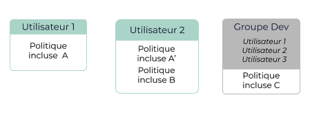
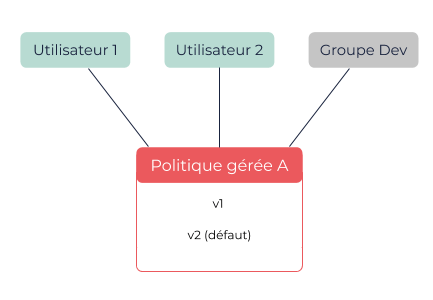

À propos des politiques
Les politiques vous permettent d’accorder des autorisations à des utilisateurs ou des groupes. Dans une politique, vous définissez les actions que vous autorisez ou refusez à un utilisateur ou groupe.
Vous pouvez définir ces autorisations dans des politiques incluses, intégrées à des utilisateurs ou des groupes, ou dans des politiques gérées, que vous pouvez attacher à plusieurs utilisateurs ou groupes et détacher à tout moment.
Autorisations et politiques
Les autorisations vous permettent de gérer et contrôler qui peut effectuer quelles actions sur votre compte. Ces autorisations sont contenues dans des politiques à l’aide de documents de politiques, que vous spécifiez lorsque vous créez des politiques.
Lorsque vous créez un utilisateur ou un groupe, ceux-ci n’ont aucune autorisation par défaut, ce qui veut dire qu’ils ne peuvent effectuer aucune action. Pour donner des autorisations à un utilisateur ou groupe, vous devez donc utiliser des politiques. Pour en savoir plus, voir À propos des utilisateurs EIM et À propos des groupes EIM.
Les autorisations vous permettent de spécifier quelle action l’utilisateur ou groupe peut effectuer. Par exemple, vous pouvez donner autoriser les actions CreateVolume et AttachVolume. Pour en savoir plus, voir la section Documents et déclarations de politiques ci-dessous.
|
Les créateurs de ressources n’ont pas automatiquement l’autorisation d’accéder aux ressources qu’ils créent ni d’effectuer des actions sur celles-ci. Les utilisateurs ont uniquement les autorisations qui leur ont été explicitement données. Par exemple, si un utilisateur a l’autorisation de créer des machines virtuelles (VM), mais pas de décrire des VM, il ne peut pas décrire les VM qu’il crée à moins que vous le lui autorisiez. |
Politiques incluses et gérées
Vous pouvez donner des autorisations à des utilisateurs ou des groupes à l’aide de politique incluses ou de politiques gérées :
-
Les politiques incluses sont intégrées à un utilisateur ou groupe, et font ainsi partie de cette identité EIM.
-
Les politiques gérées sont des politiques indépendantes de toute identité EIM que vous pouvez attacher à plusieurs utilisateurs ou groupes, et détacher à tout moment.
Les autorisations sont incrémentales : vous pouvez donc appliquer simultanément des politiques gérées et incluses, et les utilisateurs peuvent bénéficier simultanément de politiques qui leurs sont appliquées individuellement et de politiques appliquées à des groupes auxquels ils appartiennent.
Politiques incluses
Une politique incluse est uniquement appliquée à l’identité EIM (utilisateur ou groupe) à laquelle elle est intégrée et ne peut pas être partagée avec une autre identité EIM. Vous pouvez cependant créer des copies donnant les mêmes autorisations intégrées dans d’autres identités EIM, mais ces politiques sont indépendantes les unes des autres.
Vous pouvez ajouter des politiques incluses à un utilisateur ou un groupe à tout moment. Vous ne pouvez cependant pas modifier une politique incluse existante. Pour mettre à jour les autorisations contenues dans une politique incluse, vous devez supprimer la politique incluse et en ajouter une nouvelle à l’utilisateur ou au groupe, ce qui vous empêche de revenir à l’état précédent de la politique. Pour en savoir plus, voir Travailler avec les politiques incluses.
|
Si vous supprimez un utilisateur ou un groupe, toutes les politiques incluses intégrées à celui-ci sont également supprimées. |
Vous pouvez utiliser les politiques incluses lorsque vous voulez vous assurer qu’une politique est uniquement attribuée à une identité EIM et ne peut être attribuée à une autre par inadvertance. Un même utilisateur ou groupe peut avoir plusieurs politiques incluses. Vous pouvez lister les politiques incluses intégrées à un utilisateur ou un groupe. Vous ne pouvez cependant pas lister toutes les politiques incluses de votre compte.

Dans le schéma ci-dessus, les politiques incluses suivantes sont appliquées :
-
Utilisateur 1 : Politiques incluses A et C
-
Utilisateur 2 : Politiques incluses A', B et C
Les politiques incluses A et A' peuvent contenir des autorisations similaires, mais sont indépendantes l’une de l’autre.
-
Utilisateur 3 : Politique incluse C
Politiques gérées
Les politiques gérées sont des politiques indépendantes qui peuvent être attachées à plusieurs utilisateurs ou groupes et qui peuvent être détachées à tout moment. Ceci vous permet de créer une bibliothèque de politiques regroupant les autorisations pour les différents profils les plus communs de votre organisation, et de les attacher à des utilisateurs ou des groupes selon leur profil. Pour cela, vous pouvez lister toutes les politiques gérées disponibles dans votre compte.
|
Vous pouvez attacher jusqu’à deux politiques gérées en même temps à un même utilisateur ou groupe, s’ils ont besoins de plusieurs profils d’autorisations. |
Vous pouvez modifier une politique gérée à tout moment, ce qui crée une nouvelle version de la politique. Vous pouvez ensuite définir cette nouvelle version comme celle par défaut, c’est-à-dire la version active appliquée aux utilisateurs et groupes auxquels la politique est attachée. Les politiques gérées vous permettent donc de gérer de manière centralisée les autorisations pour l’ensemble des utilisateurs ou groupes auxquels la politique est attachée, en appliquant à tous la même version du document de politique. Il est par exemple impossible d’appliquer une version v1 à un utilisateur et une version v2 à un autre utilisateur. Pour en savoir plus, voir Éditer des politiques gérées avec les versions.
Les versions précédentes ne sont pas supprimées lorsque vous en créez de nouvelles, et vous pouvez donc revenir à une version précédente de la politique à tout moment. Pour en savoir plus, voir Définir la version par défaut d’une politique gérée.
Si vous détachez une politique d’un utilisateur ou d’un groupe, les autorisations qu’elle contient ne sont plus appliquées, mais la politique n’est pas supprimée. Pour supprimer une politique gérée, vous devez d’abord la détacher de tous les utilisateurs ou groupes auxquels elle est attachée, puis la supprimer manuellement. Pour en savoir plus, voir Supprimer une politique gérée.

Dans le schéma ci-dessus, la version v2 de la politique gérée A est appliquée à l’utilisateur 1, l’utilisateur 2 et les utilisateurs qui appartiennent au groupe Dev. Toute modification de cette politique est appliquée à l’ensemble de ces utilisateurs.
Documents et déclarations de politiques
Les documents de politiques contiennent des autorisations qui sont organisées en déclarations (une autorisation par déclaration). Pour chaque déclaration, vous pouvez définir les éléments suivants :
-
Actions : Les actions que l’utilisateur ou groupe peut effectuer.
-
Effect : Indique si les actions sont autorisées (
allow) ou bloquées (deny). Par défaut, toutes les actions sont bloquées. -
Statement ID (SID) : Un identifiant unique pour la déclaration, choisi par l’utilisateur qui la crée.
Pour en savoir plus, voir Éléments des politiques EIM.
Pour modifier un document de politique, vous pouvez uniquement :
-
Supprimer la politique actuelle et en ajouter une nouvelle à l’utilisateur ou groupe si vous utilisez les politiques incluses.
-
Créer une nouvelle version de la politique et la définir comme celle par défaut si vous utilisez les politiques gérées.
Pages connexes